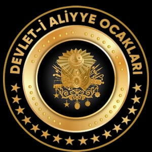

Osmanlı tarihini ve medeniyetini genç nesillere doğru şekilde aktarmak.
Birlik, dayanışma ve ümmet bilinciyle güçlü bir gençlik yetiştirmek.
Ahlaklı, bilinçli ve kültürel değerlerine sahip bireyler yetiştirmek.